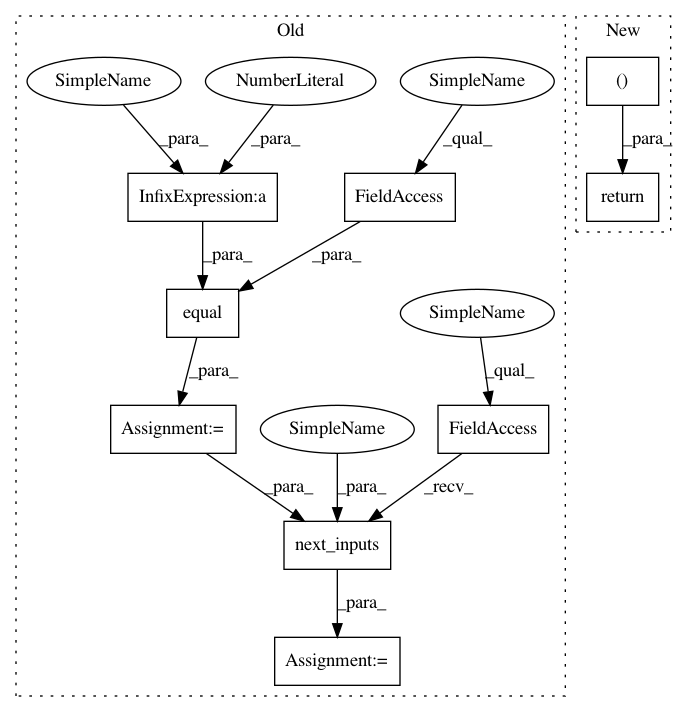

2307d99d0141d9d2d2e99a67aaae04fdae42f71e,texar/tf/modules/decoders/rnn_decoders.py,AttentionRNNDecoder,step,#AttentionRNNDecoder#Any#Any#Any#Any#,592
Before Change
logits = self._output_layer(wrapper_outputs)
sample_ids = self._helper.sample(
time=time, outputs=logits, state=wrapper_state)
reach_max_time = tf.equal(time+1, self.max_decoding_length)
(finished, next_inputs, next_state) = self._helper.next_inputs(
time=time,
outputs=logits,
state=wrapper_state,
sample_ids=sample_ids,
reach_max_time=reach_max_time)
attention_scores = wrapper_state.alignments
attention_context = wrapper_state.attention
outputs = AttentionRNNDecoderOutput(
After Change
logits, sample_ids, wrapper_outputs,
attention_scores, attention_context)
return (outputs, sample_ids, logits, wrapper_state)
def next_inputs(self, sample_ids, time, outputs, state):
(finished, next_inputs, state) = self._helper.next_inputs(
time=time,
In pattern: SUPERPATTERN
Frequency: 3
Non-data size: 9
Instances
Project Name: asyml/texar
Commit Name: 2307d99d0141d9d2d2e99a67aaae04fdae42f71e
Time: 2019-09-13
Author: pengzhi.gao@petuum.com
File Name: texar/tf/modules/decoders/rnn_decoders.py
Class Name: AttentionRNNDecoder
Method Name: step
Project Name: asyml/texar
Commit Name: 2307d99d0141d9d2d2e99a67aaae04fdae42f71e
Time: 2019-09-13
Author: pengzhi.gao@petuum.com
File Name: texar/tf/modules/decoders/transformer_decoders.py
Class Name: TransformerDecoder
Method Name: step
Project Name: asyml/texar
Commit Name: 2307d99d0141d9d2d2e99a67aaae04fdae42f71e
Time: 2019-09-13
Author: pengzhi.gao@petuum.com
File Name: texar/tf/modules/decoders/rnn_decoders.py
Class Name: BasicRNNDecoder
Method Name: step